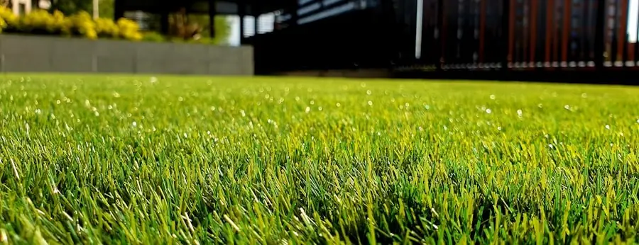

Softscape
Artificial Turf Installation in South Florida
An excellent answer to a specific problem — and the wrong answer to several others. This page is about telling which one you have.
Most turf disappointments were decided before the turf arrived
Homeowners rarely ask for turf because they want a synthetic lawn. They ask because a particular piece of ground has stopped cooperating — a strip beside the house that never fills in, a run the dog has worn to sand, a small courtyard that is too shaded and too enclosed for grass to establish. Turf is genuinely good at solving those.
When it disappoints, the reason is almost never the product. It is that the ground beneath it was not prepared to drain, that the edges were not anchored to anything solid, or that it was laid across an area whose real problem was standing water. Turf is a finish. What sits under it is the actual job, and it is the part you will never see again once the work is done.
So this page spends most of its length on the ground, on the edges and on the honest limits — heat included — rather than on the fibre. If you want the short version: bring us the difficult patch, not the whole yard, unless the whole yard genuinely qualifies.
First question
Where turf earns its place — and where it does not
Worth reading before anything else on this page. A contractor who tells you every square foot of your property is a candidate is not assessing your property.
Strong candidates
Ground where grass keeps losing. Deep shade against a north wall, a narrow side yard between the house and the boundary, the strip under a mature canopy — places where sod has been replaced more than once and lost again each time.
Concentrated wear. A route the dog patrols, the ground under a swing set, the path everyone takes to the gate. Living grass cannot recover as fast as that traffic wears it down.
Small, enclosed spaces. A courtyard or a side return where getting a mower in is a nuisance and the area is too small for a lawn to look like a lawn.
Framed panels within hardscape. Green set between paved zones, where the shape is deliberate and the edges are already firm.
Think harder about
Large open ground in full sun. The bigger and more exposed the area, the more the heat discussion further down this page matters, and the less of the year it is comfortable barefoot in the afternoon.
Ground that already floods. Water that stands after a storm is telling you something about levels and soil. Turf laid over it produces a green puddle. Fix the ground first or the turf inherits the problem.
Areas under heavy leaf and fruit drop. Turf handles debris, but organic matter left to break down in the pile is what makes a turf lawn look tired. A messy tree means more housekeeping, not less.
Anywhere planting is the better answer. Sometimes the honest recommendation is beds, gravel, groundcover or more paving — and we would rather say so at the consultation than install something you stop liking.
On water and mowing
Turf is not irrigated and not mowed, so it changes how a yard is looked after. We deliberately do not publish a savings figure — the honest number depends on your irrigation system, your soil, your rainfall, your rates and how the lawn was managed before, and any single percentage quoted to every homeowner is a marketing number rather than a measurement of your property.
Residential use
Backyards, zone by zone
Turf is rarely the right answer for an entire back yard, and very often the right answer for one or two parts of it.
The play zone
Even wear, no bare patches by August, and nothing tracked indoors after rain. The area under and around equipment takes the most punishment, so it is worth setting its extent generously rather than to the exact footprint.
The green edge to a patio
A band of green softening the boundary of a paved patio keeps the yard from reading as one continuous hard surface, without asking grass to survive in the narrow, hot, foot-traffic strip closest to the paving.
The dog run
A defined area where the dog goes, built to drain and to be rinsed. Containing that use to one zone protects the rest of the yard and makes the routine described below far easier to keep up.
The side yard
Usually shaded, usually narrow, often the route to the trash and the meter. Grass rarely establishes; mud usually does. It is the single most reliable place turf outperforms sod.
Around a shade structure
The ground under a pergola or beside a tiki hut gets shade and concentrated furniture traffic in the same place. Turf tolerates both; shaded turf is also considerably more pleasant underfoot than turf in open sun.
The putting or games strip
A short-pile panel used for practice or games has different fibre and infill requirements from a lawn panel, and it wants a flatter, more precisely graded base. Say at the consultation if that is the intention, because it changes the specification.
The part you never see
Base preparation and drainage
Everything that determines whether a turf lawn still looks right in five years happens below the backing.
Take the organic material out
Existing sod, roots and topsoil are removed rather than covered. Organic material left in place decomposes, loses volume and settles unevenly, and the settlement shows through the surface as dips that cannot be corrected without lifting the turf.
Build and compact an aggregate base
A crushed aggregate layer is placed and compacted in a way that gives the surface something stable to sit on while still letting water pass through it. Compaction is what stops footprints becoming permanent; permeability is what stops the lawn holding water.
Grade for fall, not for flat
Water entering the backing has to travel somewhere once it reaches the base. The base is graded to a deliberate fall toward ground that can receive the water, which is a different exercise from levelling an area until it looks even.
Deal with existing water problems first
If part of the yard already ponds, that is a ground condition, not a turf condition. It gets resolved as part of the preparation — regrading, a drainage run, or a different extent for the turf — because laying over it simply changes the colour of the puddle.
Separation and weed suppression
A separating layer keeps the base and the soil from mixing and suppresses growth from below. It is cheap at this stage and impossible to add later.
Perimeter first, field second
Every edge needs something solid to be fixed to — paving, a header, a wall, a mow strip. Where an edge is soft, the turf lifts there first, so the perimeter detail is designed before the panel layout is set out.
Pet use
Living with dogs on turf
Why it works
A dog cannot wear a bald patch into turf, cannot dig a hole in it where the perimeter is properly anchored, and cannot carry mud in from it. For households where the yard has effectively become the dog's yard, that combination is the whole reason turf comes up.
Why the base matters even more here
Liquid has to leave quickly. A base built to drain freely takes urine down and away with the next rain or rinse; a base that holds moisture keeps it in the profile, and that is what people are describing when they say a turf lawn smells. The fibre gets blamed and the base is usually responsible.
The routine, honestly stated
Solids get picked up as they would from grass. The area gets rinsed regularly — more often in the hottest, driest stretches, when there is no rain doing it for you. A pet-specific infill is worth discussing at specification stage rather than after installation, because changing it later means brushing out and re-dressing the whole panel.
Anchoring, where a dog is involved
Dogs test edges. Perimeters get fixed more densely on a pet installation, and any edge a claw can reach under gets a solid restraint rather than a soft one. It is a specification difference, and it is worth telling us about the dog before we set out the job rather than after.
Tell us about the animals
How many, how big, how energetic, and whether the yard is where they spend the day. It changes the fibre, the infill, the anchoring density and sometimes the extent of the area — and none of those are easy to revisit once the panel is down.

Junctions
Where turf meets paving, pool and planting
Turf is judged at its edges. The middle of a panel looks after itself; every problem worth having an opinion about happens in the last six inches.
Against paving
Where turf runs to a paved surface, both sides need to arrive at the same finished height. A lip catches feet and furniture; a gap collects debris and gives the edge somewhere to lift. The paving edge doubles as the anchor, which is why the two trades are set out together rather than in sequence.
Against a pool surround
Turf beside a pool deck is a common and sensible combination — the strip nearest a surround is often exactly where grass struggles. Two things to plan for: the deck must still shed its water away from the pool and into ground that can take it rather than into the turf base as an afterthought, and the turf itself receives splash-out and pool water routinely, so it wants rinsing like the rest of the surround.
Against planting beds
A bed edge is soft ground, so it needs a header or restraint for the turf to be fixed to. That also gives the bed a defined line and keeps mulch and soil from migrating into the pile.
Against a boundary
Turf running to a fence line meets posts, gates and often a change in level. Those are cut around individually, and the detail is worth agreeing on site rather than assuming a straight run.

The honest limit
Heat, said plainly
Synthetic fibre in direct South Florida sun gets hot — hotter than living grass beside it, and hot enough to matter for bare feet and for paws in the middle of the afternoon. The physical reason is straightforward: a living lawn is constantly releasing moisture and cooling itself in the process, and turf has no equivalent mechanism.
This is the thing to weigh before you commit to a large sunny area. It is not a defect and it is not a reason to rule turf out; it is a property of the material, and you should hear it from the contractor rather than discover it in July.
What genuinely helps: shade over the area, whether from a structure or an existing canopy, which changes the surface temperature far more than any product specification; a rinse with a hose a few minutes before the area is used barefoot; lighter infill tones rather than dark; and siting the turf where it is not the primary lounging surface at two in the afternoon.
What we will not do is quote you a temperature reduction for a product described as heat-reducing. Those figures depend entirely on how and where they were measured. If a product is offered on that basis, ask for the manufacturer's own documentation and read what the test actually covered before it influences the decision.
How it runs
A turf installation, step by step
-
Site assessment
Where water currently goes, how much sun the area takes, what the ground is made of, what edges exist to anchor to, and who and what will use it. The extent of the turf is decided here, and sometimes it comes out smaller than the original idea.
-
Specification and proposal
Fibre, pile, infill and anchoring chosen against the use — pet run, play area, lawn panel or putting strip — with the extent, the edge details and any drainage work set out in writing before anything begins.
-
Clearing and excavation
Sod, roots and topsoil removed to the depth the build-up requires, with existing irrigation heads in the area capped or relocated rather than buried.
-
Base build and grading
Aggregate placed, compacted and graded to the falls agreed at design stage, with any drainage run installed at this point because it cannot be added afterwards.
-
Laying, seaming and anchoring
Panels rolled out and allowed to relax, oriented so the pile runs consistently across the area, seamed so joins are not read as lines, cut to the edges and anchored to the perimeter.
-
Infill, brushing and walkthrough
Infill spread and worked in to support the fibres, the surface power-brushed to lift the pile, the site cleared, and a walkthrough covering the upkeep routine for the specific use it was built for.
Afterwards
Lower maintenance, not no maintenance
No mowing, no feeding, no reseeding. What replaces them is housekeeping, and skipping it is what makes a turf lawn look tired.
Clear debris before it breaks down
Leaves and fruit sitting in the pile decompose into exactly the organic material the base was cleared of. A blower or a stiff brush, often enough that nothing composts in place.
Rinse
Dust, pollen, sunscreen and pet use all end up on the surface. Water is the whole method. Pet areas want it as a routine rather than an occasional job.
Brush the traffic routes
Fibres lay over where people walk and where furniture sits. Brushing against the pile lifts them again, which is what keeps a two-year-old lawn from reading as a path.
Top up infill where it thins
Infill migrates from the busiest areas over time. Topping those up keeps the fibres supported and the surface consistent underfoot.
Watch the edges
Perimeters and seams are where age shows first. Checking them occasionally is a five-minute job; re-anchoring a lifted edge before it becomes a trip hazard is much easier than after.
Keep heat sources away
Synthetic fibre and radiant heat do not mix. Grills, fire features and reflected glare from low-e glazing all deserve a hard surface between them and the turf, and that gets planned rather than discovered.

Why Arco
We will happily talk you out of turf
Right area, right reason
Some ground suits turf and some does not, and we would rather propose a smaller area that works than a larger one that you stop enjoying by the second summer.
The base is the job
Excavation, compaction, grading and drainage are where our time goes, because that is what decides how the lawn behaves long after the fibre has been chosen.
Licensed and insured
Our Florida Certified Building Contractor licence is CBC1269393. The number sits in the footer of this site on purpose, so you can check it against the state record before you invite anyone onto your property.
Areas we serve
Turf installation across South Florida
Common questions
Turf questions we are asked most
Does artificial turf get hot in the sun?
Yes. Synthetic fibres in full South Florida sun reach surface temperatures well above what living grass reaches, because living grass is releasing moisture and turf is not. That is a real difference and anyone selling you turf should say so plainly. What changes it is shade over the area, a rinse with a hose before barefoot or paw traffic, and a lighter-toned infill. What does not change it is a marketing claim, so ask for the manufacturer's own documentation on any product described as cooling and read what it actually measures.
Is artificial turf suitable for dogs?
It is one of the most common reasons homeowners ask for it, and it works well when the installation is built for it from the ground up. That means a base that drains freely rather than one that holds liquid, a fibre and infill combination chosen for pet use, generous anchoring at every edge a dog can get a claw under, and a routine of rinsing the area. Turf does not absorb odour by itself, but anything sitting in the base or the infill will produce it, which is why drainage and rinsing matter more than the fibre you choose.
What goes underneath artificial turf?
Existing sod and topsoil are removed, then a compacted aggregate base is built and graded to the finished levels and falls the area needs. A separating and weed-suppressing layer sits between the ground and the base or the turf depending on the detail. The turf is then laid, seamed, anchored around the perimeter and brushed with infill. Almost every turf lawn that fails does so because that sequence was shortened, not because the turf itself was poor.
How does rainwater drain through a turf lawn?
Through perforations in the backing, into the aggregate base beneath it, and then away along the fall the base was built to. That is why the base is graded rather than simply flattened. On a site where water already stands after heavy rain, the standing water is a ground problem that existed before the turf, and it has to be addressed as part of the work rather than covered over — turf laid across a low spot produces a green low spot.
How much maintenance does artificial turf need?
Less than a lawn, and more than none. There is no mowing and no feeding. There is rinsing, clearing leaves and debris before they break down in the pile, brushing high-traffic routes so the fibres stand back up, topping up infill in the areas that get walked most, and keeping the edges checked. Treat it as a surface that needs housekeeping rather than gardening and it stays looking the way it did when it was laid.
Can turf be laid right up to a pool deck or patio?
Yes, and the junction is where the quality of the job shows. Turf needs a firm edge to be anchored against, the two finished surfaces need to agree on level so there is no lip to catch a toe, and the paving still has to shed its water somewhere that can take it. Where turf meets a pool surround, splash-out and pool water arrive on it regularly, so rinsing that strip is part of looking after it. All of that is a design decision made before anything is dug, not a trim made at the end.
Show us the patch that keeps failing
We will tell you whether turf is the right answer for it, what the ground underneath needs first, and where on your property we would not recommend it at all.